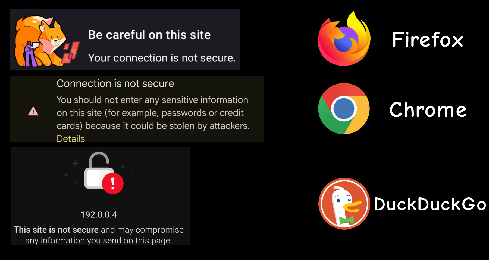

What do all the parts of a URL mean:
Explaining https, subdomains, registered domains, SLDs, TLDs, and paths
Part 1: https://
https:// or http:// stands for "Hypertext Transfer Protocol (Secure)"The difference between the two is the last part - "Secure"
If the website has an SSL certificate, its URLs will start with https://, and be encrypted, otherwise the URLs will start with http://, and not be encrypted.
This actually depends on whether TLS is configured, but it usually is configured automatically when obtaining an SSL certificate.
The practical difference for you, as the user
If a website has no TSL configured, the connection is not secure. If a website has TLS, the connection will be encrypted.
That means that data transferred between you and the website will only be accessible to you and the website. Any middlemen, like your ISP (Internet Service Provider) or VPN will only see the destination (the website), not the data.
Using "not secure" websites, websites that start with http:// is safe, but your ISP, VPN, or even wifi router can see what you enter into forms, what accounts you log in to, etc. in plain text. This is particularly dangerous if you're connected to a public wifi network or your home wifi has been compromised.

Part 2: Subdomains
It's the "www" in www.domain.com. User-defined.Subdomains are in a lot of ways treated as different websites.
For example, cookies aren't inherited from www.domain.com to shop.domain.com.
Different subdomains can also have the same paths that lead to different pages, so www.domain.com/home/ is a different page from shop.domain.com/home/.
Different subdomains can be set to point to different directories on the server in the settings of your DNS.
Part 3: Registered Domains
It'a the "domain.com" in www.domain.com. A registeted domain is essential to running a website. Further in this part just "domain".The domain is your domain.com. You have to buy it, or rather rent. Domains are sold for a fixed amount per year.
You might be wondering who's selling them and where they got the domains from.
The domains are sold by domain registrars.
They buy the domains from regitries (which operate specific TLDs, more on that later). The registries get their domains directly from ICANN.
Domains are usually relatively cheap, for example, mine is ~7€/year. It's a .xyz domain, so it's cheaper than a .com, but those are still usually below 20€/year.
Part 4: SLDs (Second-Level Domains)
It's the "domain" in www.domain.com. There's not much to it. User-defined when bying the registered domain.Part 5: TLDs (Top-Level Domains)
It's the ".com" in www.domain.com. Has to be picked from a list.Some TLDs are only available if you meet certain requirements, for example, .us requires you to be a citizen, a resident, or an organization with a presence in the Unites States.
Part 6: Paths
It's the "/path/" in https://www.domain.com/path/Shows the absolute path to the webpage inside of the website directory. For example, this page you're on is located in sckart.xyz/articles/url-structure-explained/ - the folder can be named anything, btw.
Now, why does it not show the actual file in the URL? What if there are multiple webpages in that folder?
It does! Why don't you see it? That's because the file is named "index.html" (the extension doesn't have to be .html).
Files named "index" don't show up in the URL, and are the default webpage you get if you only input the path.